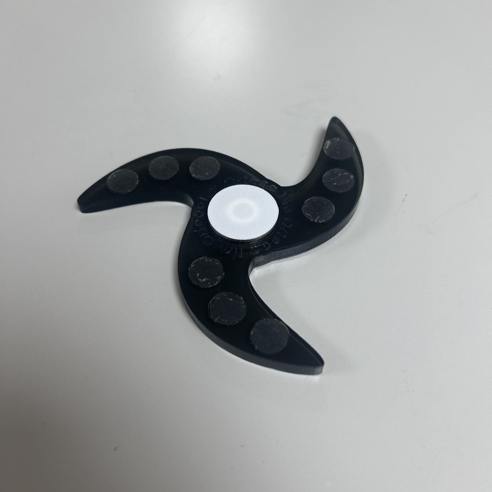

The story
I designed and built a fidget spinner by combining a purchased bearing with laser-cut acrylic and 3D-printed components. The project connected CAD geometry to real hardware and gave each fabrication method a specific job.
One small object, several manufacturing processes, and a shared mechanical interface.

I designed and built a fidget spinner by combining a purchased bearing with laser-cut acrylic and 3D-printed components. The project connected CAD geometry to real hardware and gave each fabrication method a specific job.
I used SolidWorks to bring together the spinner’s geometry and its interfaces. Laser cutting produced the acrylic profile, while 3D printing made the complementary printed components. A purchased bearing provided the rotating interface.
Combining these processes meant thinking about what each one contributes: a flat profile from sheet material, shaped features from additive manufacturing, and a precision component sourced as standard hardware.
The design had to accommodate the actual bearing and the parts surrounding it. Fit and alignment matter at that interface: the printed pieces, acrylic, and bearing must come together as a usable object.
This project was a compact exercise in design for manufacture and assembly. It connected a digital assembly to the tolerances and material behavior of real fabricated parts.